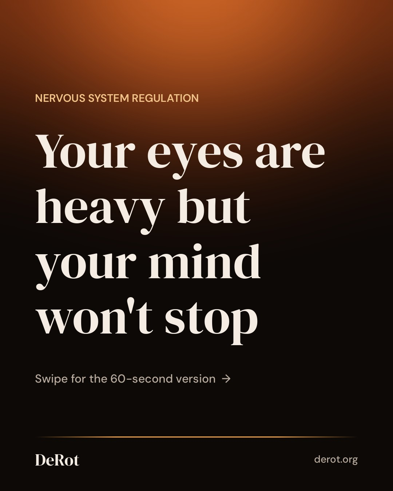
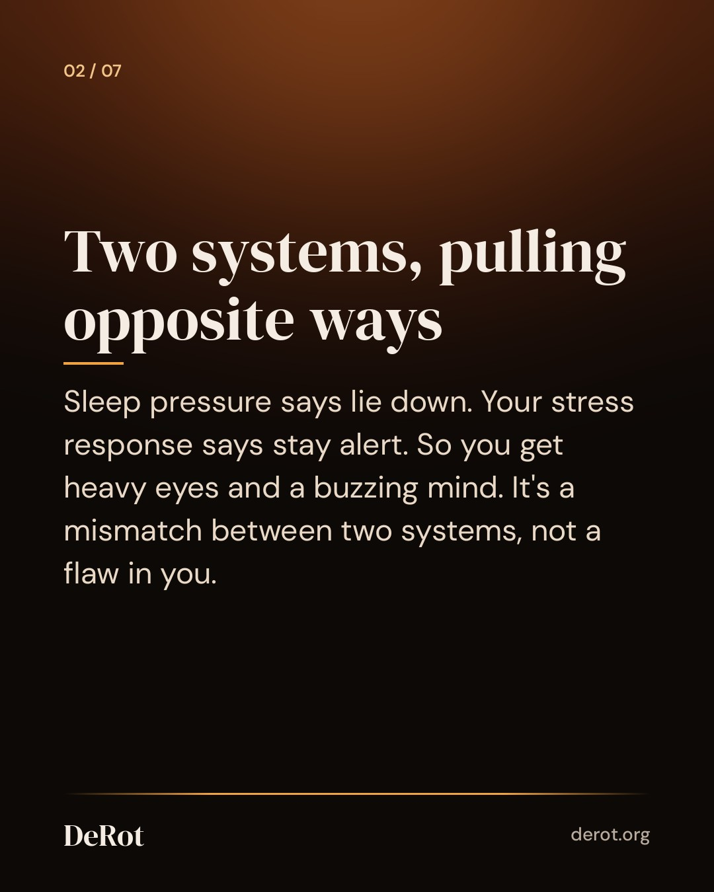
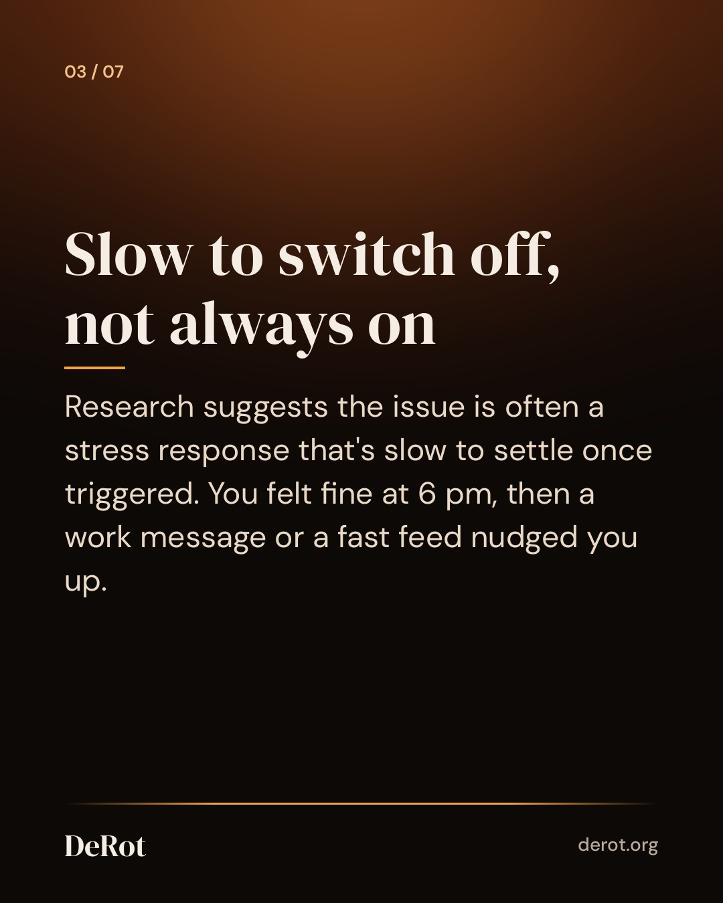
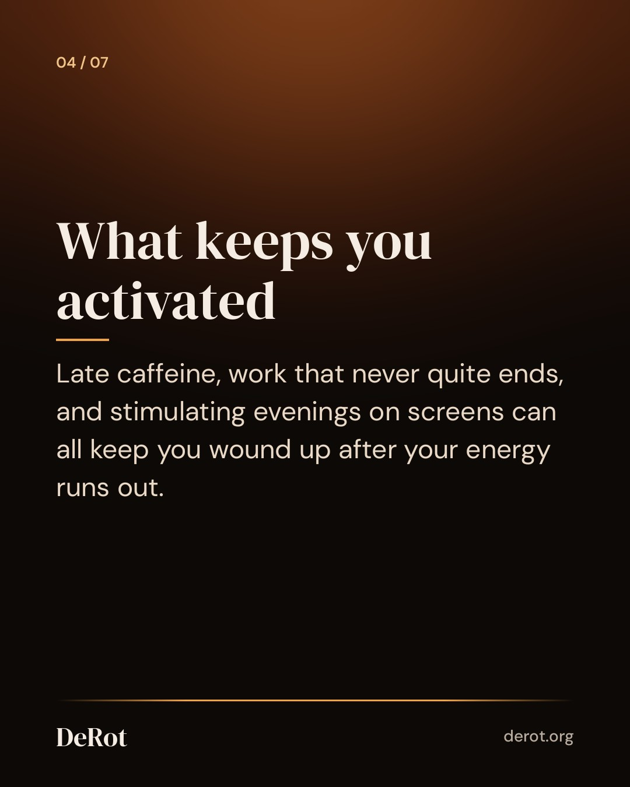
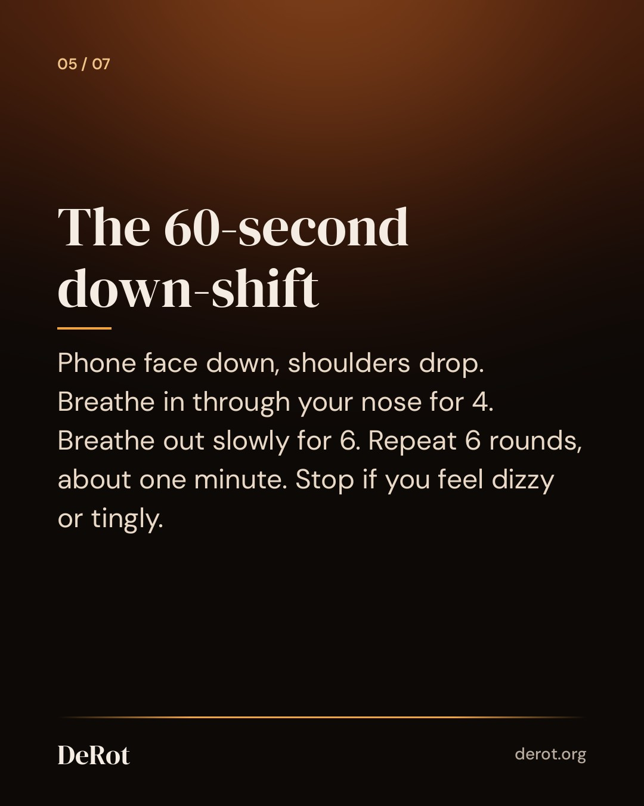
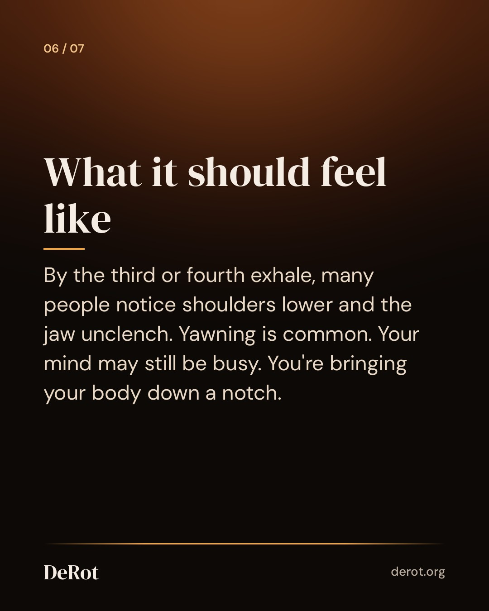

Why Do I Feel Wired but Tired? What's Happening and How to Come Down
Slides (Threads cover image; Instagram posts the reel)







Instagram Reel (34s)
Instagram caption
Tired eyes, buzzing mind: your sleep pressure is high but your stress response is still on. Try a one-minute down-shift. Put the phone face down, breathe in through your nose for 4, then out slowly for 6. Six rounds, about a minute. Many people notice their shoulders drop and jaw unclench by the third or fourth exhale. Stop if you feel dizzy or tingly. Full guide: link in bio. #breathwork #nervoussystemregulation #slowbreathing #eveningroutine #stressrelief
Threads
Something useful about that wired-but-tired feeling: it's often not a body on high alert all day, but a stress response that's slow to switch off once something sets it off. A work message, a tense thread, forty minutes of fast video. What helps in the moment: phone face down, inhale 4, exhale 6, six rounds. About a minute. https://derot.org/blog/why-do-i-feel-wired-but-tired/
Heavy eyes, buzzing mind. Feeling wired but tired usually means your sleep pressure is high while your stress response is still switched on. It's a mismatch between two systems, not a flaw in you. Late caffeine, work that never quite ends, and stimulating evenings on screens can all keep you activated after your energy runs out. A quick way to come down: put your phone face down, breathe in for 4, out slowly for 6, and repeat six times. It can help you feel calmer in the moment, though it isn't a sleep fix. If it happens most evenings for weeks, check in with a doctor. Read the full guide for what the evidence says and a one-minute script for the couch.
Schedule (UTC)
| queued | 2026-11-24T16:30:00+00:00 | ||
| threads | queued | 2026-11-24T16:30:00+00:00 | |
| queued | 2026-11-24T23:30:00+00:00 |